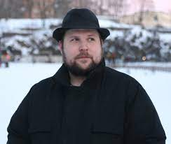
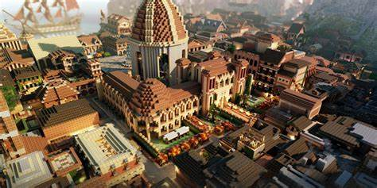

The creator

Persson's most popular creation is the survival sandbox game Minecraft,
which was first publicly available on 17 May 2009 and fully released on 18 November
2011. Persson left his job as a game developer to work on Minecraft full-time until
completion. In early 2011, Mojang AB sold the one millionth copy of the game, several
months later their second, and several more their third. Mojang hired several new staff
members for the Minecraft team, while Persson passed the lead developer role to Jens Bergensten.
He stopped working on Minecraft after a deal with Microsoft to sell Mojang for $2.5 billion.
This brought his net worth to US$1.5 billion.
About

Minecraft is a video game in which players create and break various
kinds of blocks in three-dimensional worlds. The game’s two main modes are Survival
and Creative. In Survival, players must find their own building supplies and food.
They also interact with blocklike mobs, or moving creatures. (Creepers and zombies
are some dangerous ones.) In Creative, players are given supplies and do not
have to eat to survive. They also can break all kinds of blocks immediately.
Singleplayer/Multiplayer

You can play by yourself or you can play online with others.
The smartphone and tablet versions offer multi-player options through
WiFi networks. Players can connect to thousands of Minecraft online
games (servers), some of which involve battling other players.